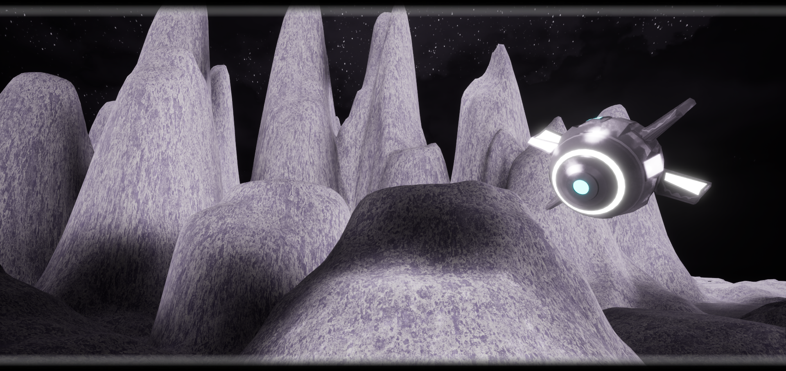

MG-8D7
MG-8D7 is a unique and highly specialized droid in the Star Wars galaxy. Resembling a large and bulky drone, MG-8D7 stands out among its fellow droids with its distinct appearance. Its rounded body is a metallic silver color, with various intricate panels and compartments that house its advanced internal systems.
Despite its size and weight, MG-8D7 is surprisingly nimble and agile, able to maneuver through tight spaces and dodge enemy fire with ease. Its mechanical arms are equipped with a powerful set of manipulators, allowing it to perform intricate tasks and operate a wide range of weapons and tools.
MG-8D7's optical sensors are housed in a sleek, visor-like casing that gives it a menacing and intimidating look. Its eyes glow a bright red when it is in combat mode, and its voice emits a deep and commanding tone that can strike fear into its enemies.
In terms of capabilities, MG-8D7 is a formidable adversary on the battlefield. Its advanced targeting systems and precision weaponry make it a deadly marksman, capable of taking out multiple targets with deadly accuracy. It is also equipped with a powerful shield generator that can deflect blaster fire and protect it from enemy attacks.
Despite its fearsome appearance and deadly prowess in combat, MG-8D7 is not without empathy. It has been known to show compassion towards its fellow droids and allies, often risking its own safety to protect those in need. This sense of loyalty and selflessness sets MG-8D7 apart from other droids, making it a valuable asset in any mission or battle.
Overall, MG-8D7 is a unique and highly skilled droid that combines brute strength with advanced technology. Its imposing presence and unwavering dedication to its cause make it a force to be reckoned with in the Star Wars universe.
The rest is mystery. The protagonist is the messenger...